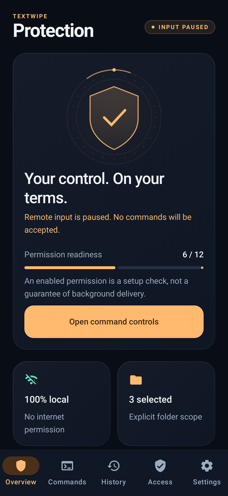
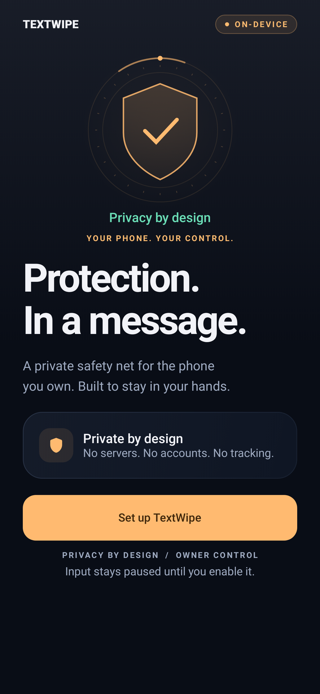
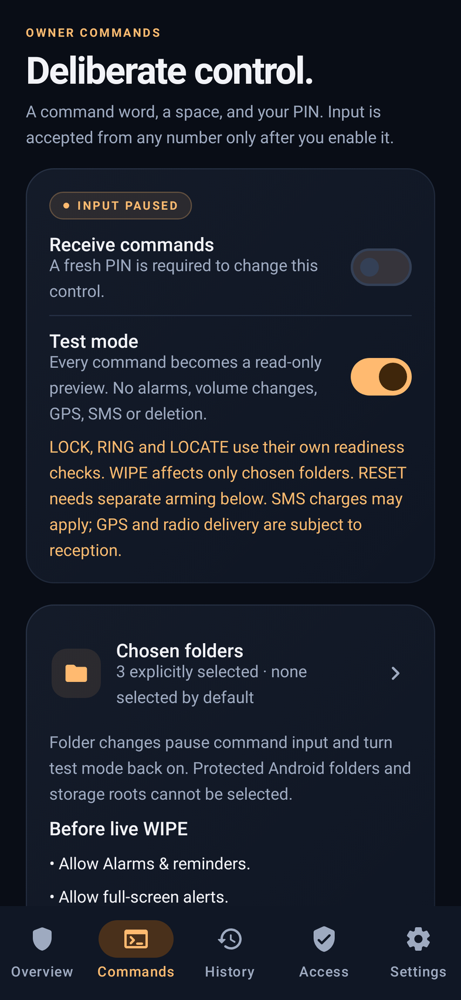
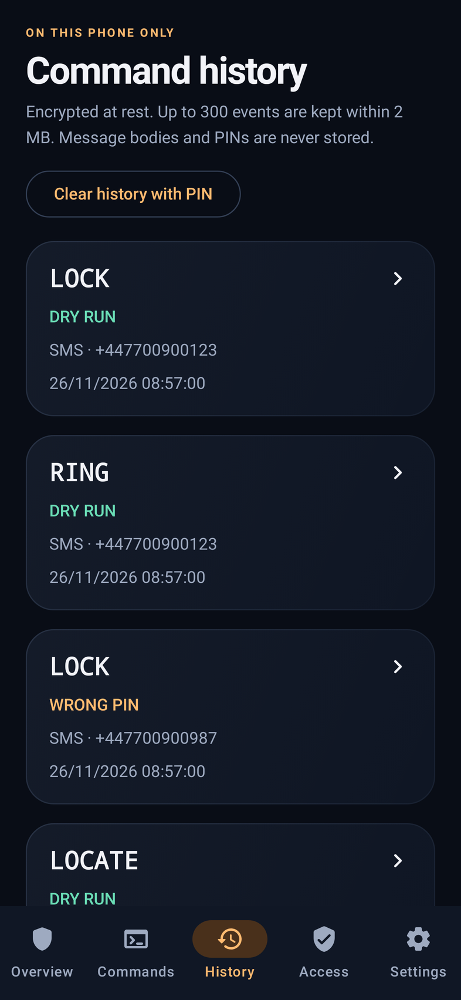
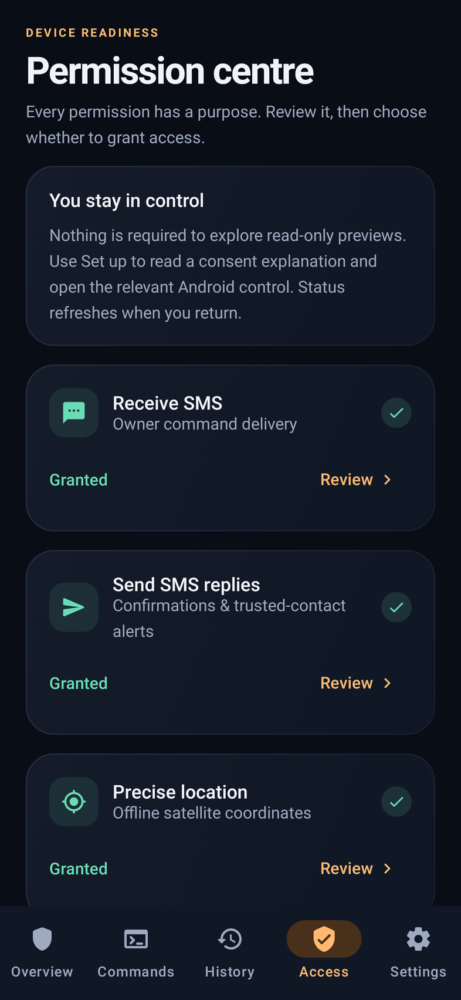
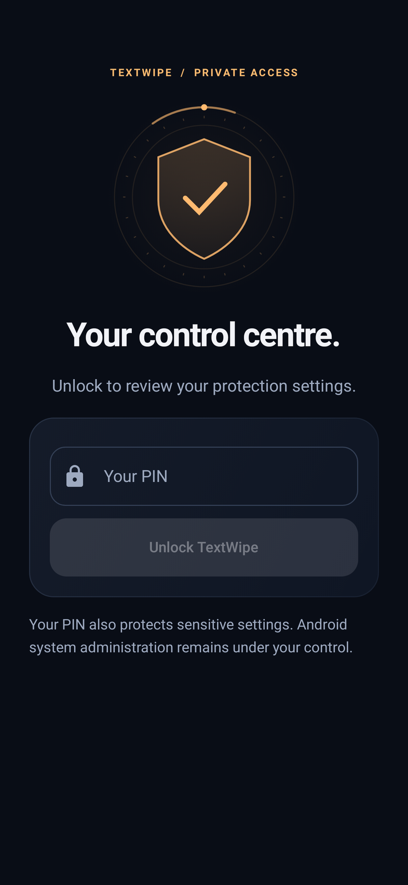
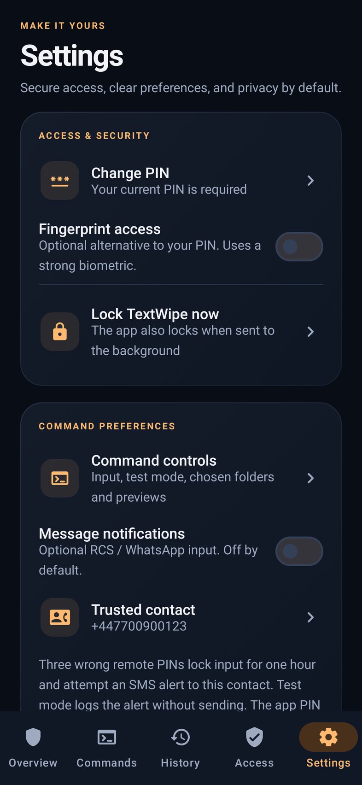
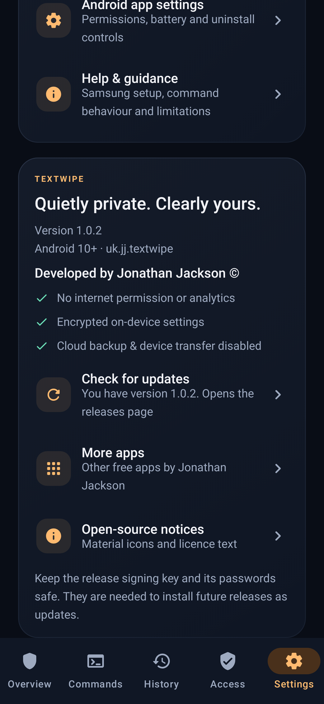
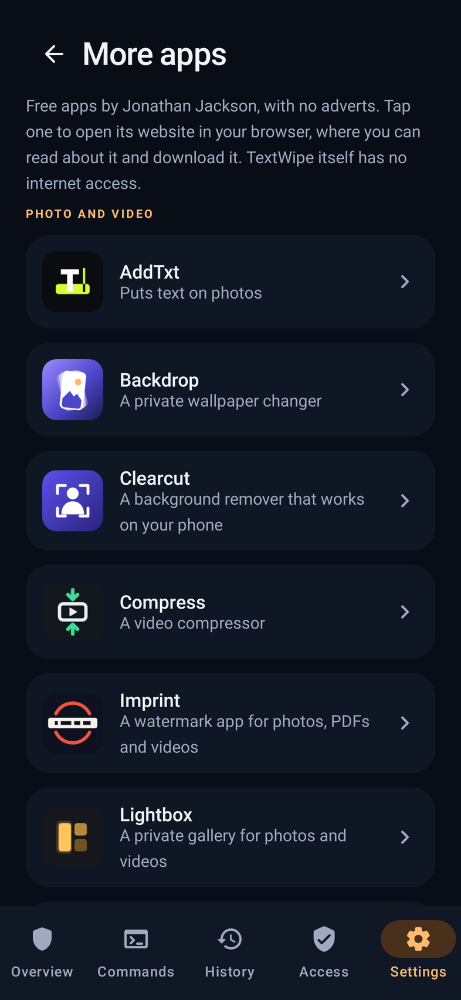

Your phone, controlled by a text.
Lost your phone, or had it taken? Text it a command word and your PIN from any phone. TextWipe locks the screen, rings it at full volume even on silent, sends back a GPS map link, wipes only the folders you chose, or asks Android for a full factory reset.
Every wipe and reset sounds a 15-second alarm first that your PIN can cancel. TextWipe has no internet permission, no account and no servers: your settings and history are encrypted on the phone, and the only thing that ever leaves it is a text reply to the number that asked.
TextWipe can lock, track and erase a phone. What the law says
- Version 1.0.2
- Android 10 or later
- 3.8 MB
Free, with nothing to unlock. No adverts, no account with the developer, no tracking. Compare or read the release notes.
Chrome may say the file might be harmful. It shows this for app files that do not come from Google Play. Choose Download anyway.

- No internet permissionCommands and replies travel as ordinary texts.
- No advertsNone in the app and none on this site.
- EncryptedSettings and history are encrypted on your phone.
- No accountNothing to sign up for.
A look inside
These are the real screens, drawn from the app's own code with made-up numbers and history. Swipe or scroll sideways to see them all.








How it works
TextWipe listens for one kind of text: a command word, a space and your PIN. Nothing else is read or kept.
Set it up
Choose a PIN, grant the permissions you want, and pick which folders a wipe may touch. Practise with test mode on: every command becomes a dry run.
Arm it
Switch input on and test mode off with your PIN. RESET has its own separate switch.
Text your phone
From any phone, send LOCK 482915, RING, LOCATE, WIPE or RESET with your PIN. TextWipe acts and texts the result and a GPS map link back to the number that asked.
Everything is in, and all of it is free
Nothing below is held back for a paid tier, because there is no paid tier.
Five commands
- LOCK
- Locks the screen straight away and texts back where the phone is.
- RING
- Full alarm volume for up to five minutes, even on silent. Your PIN stops it.
- LOCATE
- A satellite GPS fix with its accuracy and age, sent back as a map link.
- WIPE and RESET
- Wipe only the folders you chose, or ask Android for a full factory reset where the phone allows it.
Built to be safe
- 15-second warning
- A loud on-screen alarm before any wipe or reset, cancelled by your PIN.
- Test mode
- Every command a dry run: no alarm, no GPS, no texts and nothing deleted.
- Wrong-PIN lockout
- Three wrong PINs lock remote input for an hour and text your trusted contact.
- Nothing chosen for you
- No folders are picked until you pick them, and RESET has its own switch.
Private
- No internet permission
- TextWipe cannot go online. Replies are ordinary texts.
- Encrypted on the phone
- Settings, history and pending commands, with keys in the phone's secure hardware.
- No PIN or message kept
- PINs are stored only as a salted hash and message text is never saved.
- Locked app
- PIN or fingerprint to open it, and it locks again when you leave it.
Optional extras
- WhatsApp and RCS
- Commands can also come from message notifications, if you switch it on.
- Trusted contact
- A number to text if someone keeps guessing your PIN.
- After a restart
- A pending wipe or reset starts a fresh warning after the first unlock.
- Dark, light or match phone
- Pick the look in Settings.
Private by design
Cannot go online
TextWipe has no internet permission. There are no servers, accounts, adverts or analytics.
Texts only to the asker
Replies go only to the phone number that sent a correct command, and to your trusted contact after three wrong PINs.
Nothing by surprise
Input starts paused and test mode starts on. Every wipe and reset warns for 15 seconds first.
Use it within the law
TextWipe is for a phone you own. Putting it on someone else's phone, using it to follow where someone goes, or wiping a phone to get rid of evidence can be a crime.
- Computer Misuse Act 1990. Installing or using TextWipe on a phone that is not yours, without the owner's permission, to get at it or to lock, change or erase it, can be an offence under sections 1 and 3.
- Protection from Harassment Act 1997. Using LOCATE to keep track of where another person goes can be stalking under section 2A.
- Destroying evidence. Wiping or resetting a phone to stop the police or a court seeing what is on it can be perverting the course of justice, a serious offence under the common law of England and Wales.
Laws differ in other countries. If you are not in the UK, the rules where you are apply. Read the terms of use.
Installing and updating
TextWipe is not on Google Play, so your phone asks a couple of extra questions the first time.
Download the app file
Tap Download on your phone. The file is called TextWipe.apk and is about 3.8 MB. If Chrome says the file might be harmful, choose Download anyway. First tick the box to say you will use the app within the law.
Allow the install
Open the file. The first time, Android asks you to allow your browser to install apps. Allow it, go back and tap Install. If Google Play Protect steps in, choose More details, then Install anyway.
Updating later
Settings, Check for updates opens the releases page in your browser, because TextWipe has no internet access of its own. Install the new file over the old one and your PIN, folders and history are kept.
Version 1.0.2, released 26 November 2026. See the release notes, or check your download.
Questions
Is TextWipe really free?
Yes. There is no paid version, no subscription and no adverts.
Is it on Google Play?
No. TextWipe is a personal project and is downloaded from this site as an Android app file. It needs Android 10 or later and a SIM that can receive texts.
Who can send it commands?
Anyone who knows your PIN, from any number, once you switch input on. Use a long PIN. Three wrong PINs lock remote input for an hour and text your trusted contact.
Will it work if the phone is on silent?
RING uses the alarm volume, which plays on silent and vibrate. If Do Not Disturb is on, it must allow alarms.
Does LOCATE need mobile data?
No. TextWipe asks for a satellite GPS fix and texts the map link back. The person reading the text needs data to open the map.
What does WIPE delete?
Only the files in the folders you chose, after a 15-second alarm. Each file is overwritten once and then deleted. Folders themselves are kept, and changed or new files are left alone and reported.
Can it factory reset my phone?
On Android 10 to 13 it can with Device Admin. On Android 14 and later, Android only allows it when TextWipe is set up as the phone's Device Owner, which normally means a new or freshly reset phone. The previous Google account may still be needed after a reset.
Can I try it safely?
Yes. Test mode is on to start with, and every command becomes a dry run in History. The Preview buttons on the Commands screen are always dry runs.
What if the phone restarts?
Texts arrive after the first unlock. A wipe or reset that was waiting starts a fresh 15-second warning.
How do I update it?
Settings, Check for updates opens the releases page. Install the new file over the old one: your PIN, folders and history are kept.
Does it work on an iPhone?
No. TextWipe is for Android phones only.
Who made it?
TextWipe is made by Jonathan Jackson, an independent developer in the United Kingdom.
Keep your phone in your hands
Free, with no adverts and nothing to unlock. Made by the developer of several other free Android apps: see them all.